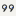
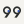
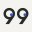

99Ways / Production asset kit v1.0
Visual proof sheet
Canonical forms, required color treatments, platform crops, actual-size favicons, and clear space.
Wordmark / light
Graphite body · blue gaze · transparent asset on Warm White proof field
Wordmark / dark
Warm White body · inverse blue gaze · transparent asset on Graphite proof field
Compact / light
Compact / dark
One-color black
One-color white
Avatar crop proofs
Square · circular · rounded-square; same asset, no geometry change
Favicon / actual display sizes



Opaque Warm White platform tile; size-specific optical derivative
Clear space
Dashed boundary is 25 design units beyond all visible artwork bounds.